When you complete this learning material, you will be able to:
Explain the methods used to remove \( \text{SO}_2 \) , \( \text{NO}_x \) , \( \text{CO}_2 \) , and particulates from boiler flue gases.
You will specifically be able to complete the following tasks:
Describe the purpose, design, operation, and application of Flue Gas Desulphurization (FGD) systems.
Sulphur Dioxide ( \( \text{SO}_2 \) ) and other oxides of sulphur ( \( \text{SO}_x \) ) are generated during combustion of specific fuels that contain sulphur or sulphur compounds (mercaptans) of some type. \( \text{SO}_x \) along with \( \text{NO}_x \) are acidic gases and contribute to the formation of acid rain. They also cause ozone depletion and add to the greenhouse gas effect that is thought to contribute to global warming. There are three methods available for reducing \( \text{SO}_2 \) emissions from the combustion process:
The method used for each facility depends upon the plant location and availability of cost effective fuels. Most provinces and/or municipalities have legislation that regulates the volumes of \( \text{SO}_2 \) that can be emitted from a boiler or the facility as a whole. The (operating permit), under which the facility is regulated, includes the maximum allowable \( \text{SO}_2 \) released without penalty to the facility owner.
A wet FGD, or wet scrubber, system is a common technology for \( \text{SO}_2 \) removal because it is highly efficient. Such scrubbers (often called stripping towers or strippers) are normally located in the flue gas stream after the baghouse or precipitator, and before the induced draft fan. The baghouse or precipitator removes particulate matter and the wet FGD scrubber removes \( \text{SO}_2 \) . In this way, the scrubber and ID fan are spared the erosion problems of handling particulate-laden gas.
A common design of wet scrubber, the spray tower, is shown in Fig.1. The flue gases move vertically upward through the tower. Reagent is sprayed into the gas stream through a series of nozzles and reacts with the \( \text{SO}_2 \) before falling to the bottom of the tower for removal, reuse, and possible regeneration. Liquid carryover is prevented by chevron-style moisture separators, such as mist eliminators. Air for forced oxidation of the slurry is sometimes added near the bottom of the tower. Forced oxidation uses air injected into the reaction tank. The air is dispersed using sparger rings or turbine mixers. The forced oxidation process has the advantage of improving sludge dewatering and reducing waste disposal costs. Multiple towers can be built, in modular format, to accommodate different gas flow rates and different \( \text{SO}_2 \) concentrations.
![A 3D cutaway schematic diagram of a wet scrubber. The main structure is a vertical cylindrical tank. At the bottom left, an inlet pipe labeled 'Flue Gas Inlet' enters the tank. Inside the tank, at the bottom, is an 'Agitator'. On the right side of the tank, there is a vertical pipe assembly with multiple spray nozzles, labeled 'Interspatial Spray Level'. At the top of the tank, a duct labeled 'Clean Gas Outlet' exits. On the right side of the tank, there are 'Recirculation Pumps' and an 'Oxidation Air Header' connected to the bottom section.](2763901b7a1fd1b5d704cdc450d12ed0_img.jpg)
Figure 1
Wet Scrubber
Common reagents include the following:
Lime and limestone are the most commonly used reagents. Neither is regenerable, so they must be continually replaced. Crushing and grinding the limestone and adding water to make slurry is usually handled on the plant site but can take place elsewhere.
Because the complete chemical reaction involves removing the sulphur in its sulphate form ( \( \text{SO}_4 \) ), any sulphite ( \( \text{SO}_3 \) ) in the slurry must be further oxidized. The slurry that is removed from the scrubber bottom is gypsum. It is usually dewatered in two stages; first, by transporting it to a dewatering pond or thickener, and second, by a mechanical de-
watering process. The solid gypsum is either used in a landfill or sold for the production of wallboard building materials. The slurry preparation process is shown in Fig.2, while Fig.3 shows more details about the preparation and addition of fresh dry limestone to the recirculated slurry.
Magnesium and chlorides often find their way into the scrubber solution. Magnesium aids in \( \text{SO}_2 \) removal while chlorides limit \( \text{SO}_2 \) removal. Magnesium and chlorides make their way into the solution from makeup water, as a constituent of the lime, or from the ash itself.
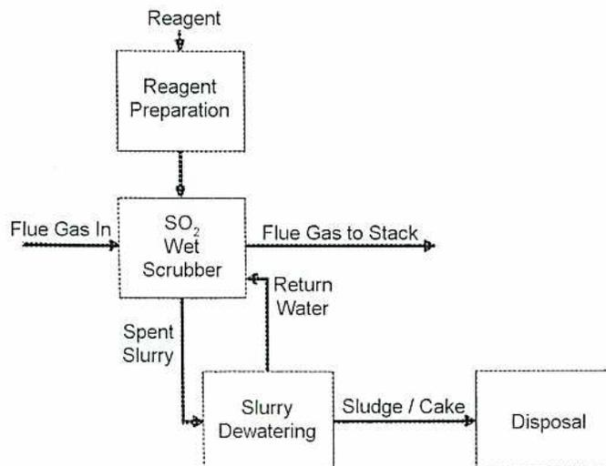
graph TD; Reagent --> RP[Reagent Preparation]; RP --> SW[SO2 Wet Scrubber]; FGI[Flue Gas In] --> SW; SW --> FGS[Flue Gas to Stack]; SW --> SS[Spent Slurry]; SW --> RW[Return Water]; SS --> SD[Slurry Dewatering]; SD --> SC[Sludge / Cake]; SC --> D[Disposal];
The diagram illustrates the slurry preparation process. It begins with 'Reagent' entering a 'Reagent Preparation' unit. The output of this unit is then fed into an 'SO 2 Wet Scrubber'. 'Flue Gas In' also enters the scrubber. The scrubber has three outputs: 'Flue Gas to Stack', 'Return Water', and 'Spent Slurry'. The 'Spent Slurry' is sent to a 'Slurry Dewatering' unit. The 'Slurry Dewatering' unit produces 'Sludge / Cake', which is then sent to 'Disposal'.
Figure 2
Slurry Preparation
Successful operation of wet FGD systems depends upon limiting scale or scale control. The pH and saturation of the solution must be controlled to stop scale formation which can plug spray nozzles, mist eliminators, and piping. The normal pH range of the spray slurry is 5 to 8.0.
![Figure 3: Slurry Preparation diagram. The process starts with Dry Limestone in a Feed Bin and Gate, which feeds into a Weigh Feeder. The Weigh Feeder feeds into a Ball Mill. Grinding Water Supply is added to the Ball Mill. The Ball Mill output goes to a Mill Product Tank. Dilution Water is added to the Mill Product Tank. The Mill Product Tank output goes to a Mill Product Pump. The Mill Product Pump feeds into a Hydrocyclone Classifier. The Hydrocyclone Classifier has an Overflow Launder and an Underflow Launder. The Underflow Launder feeds into a Limestone Feed Tank. The Limestone Feed Tank feeds into the Ball Mill. A legend indicates that solid lines represent the Main Process and dashed lines represent Water.](547f726730e589392f239257a833ede3_img.jpg)
Figure 3
Slurry Preparation
The main chemical reactions that occur when limestone is used to remove \( \text{SO}_2 \) are:
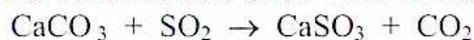
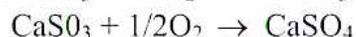
The chemical reactions using lime slurry are:
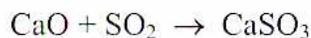
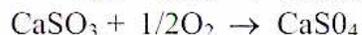
The absorption reaction of water and sulphur dioxide is:
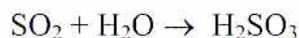
These reactions carry on simultaneously. They demonstrate how the sulphur oxides are removed from the flue gases. There are more reactions for oxidation and precipitation that are not detailed here.
An important design consideration is that the flue gases within the scrubber are saturated with water. When the flue gas temperature falls below the acid dew point temperature, or
the temperature that water vapour condenses and water forms, residual \( \text{SO}_2 \) dissolves to form acid. Solids carryover from the scrubber is also acidic making the gas stream corrosive to the downstream ductwork and stack. Solids may also deposit as the gas exits the scrubber. One way of addressing these problems is to reheat the exit gas using one of the following methods:
If the potential for acid water generation cannot be eliminated from the final duct work, or stack areas, then those specific areas can be:
A method of draining accumulations of acidic liquids is included to keep the ductwork and stack free from standing liquids.
Dry scrubbers are popular at smaller plants that have relatively low-sulphur fuel, but they are less economical than wet scrubbers if there is a large amount of sulphur to be removed. Dry scrubbers have the following advantages:
In dry scrubbers, a reagent slurry (calcium hydroxide or slaked lime) is sprayed into the flue gas stream, similar to the process occurring in a wet scrubber. However, in this case, the spray flow is very finely divided. The liquid portion completely evaporates in the gas. The remaining product, a dry solid containing the reacted \( \text{SO}_2 \) , falls into a hopper and is easily collected. Often some of the solids are mixed with the lime slurry. This is called recycle of solids. Recycle is beneficial because it lowers the overall lime consumption as there is some unreacted lime in the recycled solids.
The spray-dry process requires a particulate collecting device downstream of the scrubber tower to collect the dried reaction products and a high percentage of the flyash. If fabric filters are used, they remove 10-20% of the \( \text{SO}_2 \) and capture the dried products from the scrubber and the flue gas particulates to a specified micron size. If an Electrostatic Precipitator is used, it removes some of the remaining \( \text{SO}_2 \) but not to the level the fabric filter does (in the 5% -8% range). There a number of criteria used to evaluate the type of FGD system that is best of each facility. Dry Scrubbers come in different sizes, flow configurations, and process layouts. The quality of the atomization spray is important in FGD systems. The shape of the spray cloud and the size of the atomized droplets affect the drying of the scrubbing fluid and also the mass transfer of water and \( \text{SO}_2 \) . The scrubbers come in configurations for vertical or horizontal flows. Fig. 4 illustrates a vertical flow scrubber.
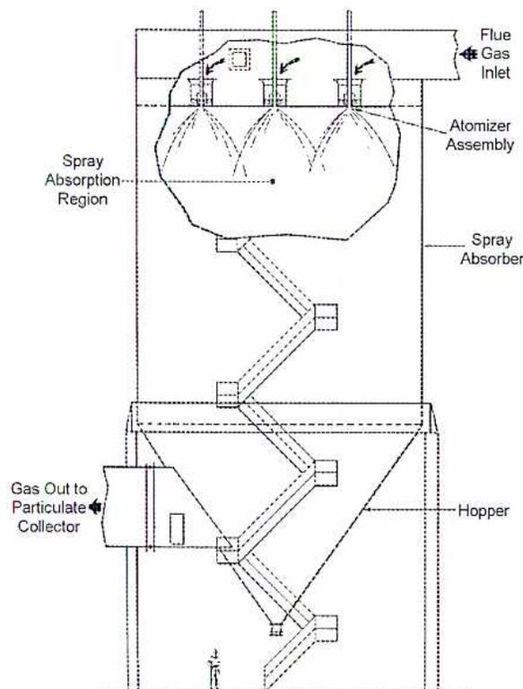
Figure 4
Vertical Flow Scrubber
There are alternatives to flue gas desulphurization by means of scrubbers. Switching to a low-sulphur fuel is sometimes an option, particularly for coal burning plants. Different coals have different percentages of carbon, hydrogen and other constituents. A lower sulphur coal may be available that can be used, eliminating or minimizing the need for expensive upgrades to achieve the required \( \text{SO}_2 \) emission reduction. Cleaning or washing the coal to remove sulphur is another possibility.
Injection of sorbent (hydrated lime, magnesium oxide, or limestone) into the furnace is one approach that is sometimes used. The chemical reaction with \( \text{SO}_2 \) is the same as for a scrubber, but the waste material is handled within the boiler as ash. Similarly, powdered trona or nacholite (naturally occurring compounds that contain sodium carbonate and bicarbonate) can be injected to absorb the \( \text{SO}_2 \) . In this case, the reaction temperature is much lower, and the chemical injection can be made after the flue gas exits the air preheater rather than into the furnace.
Directing the flue gas through a bed of activated carbon is another means of removing \( \text{SO}_2 \) . It is absorbed on the activated carbon granules. The \( \text{SO}_2 \) is oxidized to \( \text{SO}_3 \) , which forms sulphuric acid in the carbon pores. The carbon which is loaded with sulphuric acid combines with hydrogen sulphide in a separate reactor to form sulphur. This process has the advantage of reducing \( \text{NO}_x \) to 80% at the same time.
Describe the purpose, design, operation, and application of Selective Catalytic Reduction (SCR) systems.
Selective catalytic reduction (SCR) is a technology for the removal of NO x from flue gases commonly used in Japan and Europe with increasing frequency in North America. It is widely applied to exit gases from boilers and gas turbines.
In this system, the boiler flue gas is cooled to a temperature range of 300°C to 400°C. It is then directed through a structure of parallel plates or ceramic honeycombs that are coated with a catalyst, primarily vanadium, platinum, or titanium. A solution of ammonia (usually 5% concentration) is injected into the flue gas upstream of the catalyst. The injection nozzles use steam, air, or other pressurized gas as a transfer medium. The ammonia reacts with the NO x , removing it from the gas stream. The basic chemical reactions are:
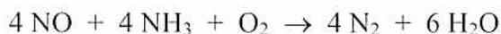
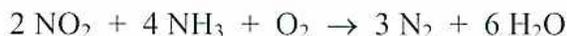
The products of the reaction are elemental nitrogen and water. They are not pollutants and do not need to be removed from the flue gas. The efficiency of NO x removal ranges from 70% to 90%. The ammonia flow is usually controlled by the SCR inlet NO x concentration. Fig.5 shows the installation of an SCR system in a boiler.
![A 3D schematic diagram of an SCR (Selective Catalytic Reduction) installation. The diagram shows a large rectangular duct containing several horizontal catalyst layers. Flue gas enters from the left and exits through a vertical duct on the right. Above the duct, an NH3 injection control system is shown, consisting of a tank, a pump, and a pipe leading to NH3 injection nozzles. Soot blowers are indicated on the left side of the duct. A separate box at the bottom right is labeled 'Catalyst module'. Labels include: Flue-gas distribution grids, Soot blowers, Catalyst layers, Spare space, Flue gas, NH3 injection control, NH3 tank, Dilution fan, NH3 injection nozzles, NOx monitor, and Catalyst module.](e7cb11f042fc58088dff4b6d9306845e_img.jpg)
Figure 5
SCR Installation
Some disadvantages of SCR installations include the following:
Some variations on this technology include the following:
Explain the significance of NO x reduction in a power plant, and the procedures and equipment used to reduce NO x emission from a boiler and from a gas turbine.
NO x emissions are a key component in the generation of acid rain which has a negative impact on the environment. Most facilities have specific permits that regulate the maximum NO x volumes they are allowed to release into the atmosphere. For new facilities being constructed, the approval process for construction and operation includes set guidelines and regulations governing the maximum allowable NO x emissions and the type of equipment that (as a minimum) must be included before construction can begin.
Fuels contain nitrogen (bound nitrogen) which contributes to NO x generation during combustion. Gas and light oil do not contain appreciable amounts of bound nitrogen. However, coal and heavy oil contain nitrogen that is bound to the fuel. Bound nitrogen can be reduced by blending different coal supplies. For example a low-nitrogen coal changes the combustion characteristics of high-nitrogen coal.
Thermal NO x is produced in the combustion reactions by atmospheric nitrogen and high furnace temperatures. Rapid mixing of fuel and air aids thermal NO x formation. Reduced furnace temperature and slower fuel/air mixing (burner staging) are two basic strategies for NO x removal. NO x production is an exponential function of temperature and a square root function of excess oxygen. However, reduced excess oxygen in the immediate vicinity of the burners reduces NO x because oxygen is required for NO x formation. Thus, it is more important to ensure that air is introduced at the right places, than it is to actually alter the amount of combustion air used. This can be a very difficult process and may require extensive study of the airflows, gas flows, and oxygen concentrations at various locations in an existing furnace. NO x concentrations can be reduced by adjusting the parameters of existing boiler operating variables such as: air distribution in the furnace, burner tilt positions, and coal fineness, and excess oxygen. Boiler NO x reduction methods that use these principles are as follows:
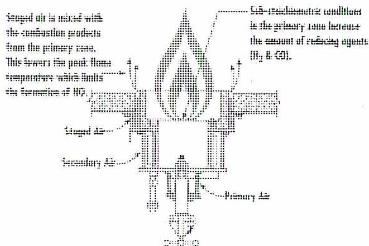
The diagram illustrates the process of air staging in a furnace burner. It shows a cross-section of a burner assembly with multiple air injection points. The primary air is injected at the bottom, and staged air is injected at a higher point. The flame is shown rising from the burner. Text labels explain that staged air mixes with combustion products from the primary zone, lowering the peak flame temperature and limiting the formation of \( \text{NO}_x \) . Another label indicates that under \( \text{NO}_x \) -reducibility conditions, the primary zone becomes the amount of reducing agents ( \( \text{H}_2 \) & \( \text{CO} \) ).
Figure 6
Air Staged Combustion
If air is leaking through the casing, the oxygen probe sees excess oxygen downstream of the burner. The burner may actually be short of air, and producing combustibles. Readings indicating both adequate excess oxygen and combustibles (incomplete combustion) are a sign of air leakage after the burner.
![Figure 7: Low NOx Burner. A detailed cross-sectional diagram of a low NOx burner assembly. The diagram shows various components with leader lines pointing to them: 'Sliding Air Damper Drive' at the top left, 'Sliding Air Damper' above the burner, 'Air Measurement Pitot Grid' in the center, 'Adjustable Inner Vanes' and 'Adjustable Outer Vanes' on the right, 'Burner Elbow' on the left, 'Primary Air / Pulverized Coal' inlet at the bottom left, 'Conical Diffuser' at the bottom center, 'Burner Nozzle' at the bottom right, and 'Flame Stabilizing Ring' at the far right. The burner is shown within a larger duct structure.](b8d3d85b1575ec6abdcf1bd9ce438701_img.jpg)
Figure 7
Low NO
x
Burner
Gas turbine NO x reduction methods include the following:
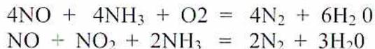
The products of the reactions are nitrogen and water. The speed and completion of the reactions depends upon temperature, pressure and the operating range of the catalyst used. Temperature ranges for SCR catalysts range from 200°C to 420°C.
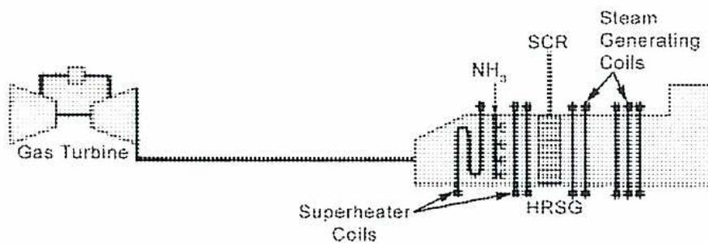
The diagram shows a process flow starting from a 'Gas Turbine' on the left. The exhaust gas flows into a 'HRSG' (Heat Recovery Steam Generator) housing. Inside the HRSG, the gas first encounters 'Superheater Coils'. Following these coils is an injection point for
Figure 8
SCR Installation in a HRSG
(Courtesy Babcock & Wilcox)
Explain the purpose, effects, and application of flue gas chemical conditioning in a power plant.
In many cases, existing plants are required under their environmental permits to adhere to pollution limits that are considerably more stringent than those in place when the plant was built. It may not be economically feasible to retrofit large amounts of equipment in order to remove pollutants from the flue gas stream, or there may be limited room to install what is needed. In some cases, the need for retrofitting can be offset or deferred by installing a chemical feed system to help reduce particulate emissions by conditioning the flue gas for better precipitator or baghouse performance. Many aging plants burning solid fuels are required to attain the particulate emissions performance of a new plant. This is often difficult to achieve without adding chemicals to the flue gas.
One type of chemical conditioner often used is a reagent that agglomerates flyash particles, forming larger particles. These larger particles, with more mass, tend to fall out of the flue gas stream more easily and drop into the hoppers of the particulate removal equipment. This works very well for electrostatic precipitators and can often reduce stack opacity to a fraction of what it was. It has a lesser, but usually significant, effect on stack opacity after a baghouse.
The reagent, in liquid form or in solution with water, is injected through atomizing sprays into the flue gas ductwork. The exact location of the sprays is determined by the temperature at which the reagent is most effective. Various proprietary compounds are used, as well as anhydrous ammonia (ammonia without added water). The control parameter is usually stack opacity, and the control method is to modulate the position of the pneumatic control valve regulating reagent flow. This is done by automatic or manual control.
Ammonia is also used in SCR (as discussed under gas turbines in L.O. 3) and SNCR systems for NO x reduction, and is a common reagent in a flue gas streams. Ammonia is a regulated pollutant in some jurisdictions, and the use of it as a flue gas conditioner raises the risk of reducing the concentration of one contaminant by elevating the concentration of another. A balance between the two is required.
If unreacted ammonia makes its way to the stack (referred to as slip ), it produces a haze in the stack plume. Ammonia can also react with chlorides in the ash to produce a more visible particulate stream making the stack plume more visible.
The choice between ammonia and a proprietary compound concerns both cost and effectiveness. As a rule, ammonia is less costly. However, the performance improvements expected from different chemicals vary from plant to plant and unit to unit, depending on the fuel in use, the age and condition of the equipment, and the nature of the equipment. The choice is often simplified by testing the options in a pilot project on the actual unit in question.
Plants that burn coal and utilize electrostatic precipitators sometimes find that an imbalance occurs over time if certain ions are present in the precipitator. Sodium depletion causes precipitator efficiency and performance to degrade gradually causing stack opacity and particulate concentration to rise.
This occurs because a thin, hard layer of sodium-depleted ash, which is difficult to remove by conventional means, develops on the precipitator collecting plates. This ash is highly resistive and impedes the precipitator's electrical performance. It is caused electrically as positively charged sodium ions migrate away from the positively charged plates. Temporary relief can be had by de-energizing the precipitator, as during a unit shutdown. However, the problem is compounded by high temperatures, so performance will continue to degrade when the unit is running.
One resolution is the addition of sodium sulphate ( \( \text{Na}_2\text{SO}_4 \) ), which ionizes in the gas stream and re-enriches the ash in the precipitator with sodium ions. Sodium sulphate is usually obtained in a powdered or granular form and added to the coal as it moves through the boiler furnace to the precipitator. Specialized bulk handling equipment must be installed to add the chemical. This is usually done on a conveyor belt as the coal enters the plant. The mass flow of the coal acts as a control parameter for the sodium sulphate flow. In this way, the mass of chemical added is in proportion to the mass of fuel being burned. The ratio can be controlled using a mass/mass ratio controller which predicts the required sodium enrichment load in the precipitator.
This approach is quite effective in reducing stack opacity but has some disadvantages:
that low sodium coal is also frequently low in sulphur content. Plants that require this type of chemical conditioning may already have low \( \text{SO}_2 \) emissions. However, there is a risk of reducing one contaminant's concentration at the expense of raising another's.
Another solution is to add sulphur trioxide ( \( \text{SO}_3 \) ) in place of sodium sulphate, thus introducing ions that behave somewhat like the depleted sodium ions. This approach produces quicker results, at less chemical cost, but has the disadvantage of introducing another pollutant into the flue gas.
To produce \( \text{SO}_3 \) , molten sulphur is kept in a heated storage vessel and burned as needed, in a burner external to the boiler. This produces \( \text{SO}_2 \) in a hot, gaseous form. The \( \text{SO}_2 \) is converted to \( \text{SO}_3 \) in a catalytic converter, and then injected into the flue gas duct where it mixes with the flue gas.
\( \text{SO}_3 \) is a combustion by-product produced by firing fuels that contain sulphur compounds. It may also enter the flue gas stream via certain processes which burn elemental sulphur to generate specific end products or by processes which inject sulphur compounds as flue gas conditioning agents for other contaminates. \( \text{SO}_3 \) produces a blue or brown haze in the stack plume, which increases the visibility of the plume. One solution is the conditioning of the flue gas with an atomized liquid spray using reagents that remove much of the \( \text{SO}_3 \) .
Different choices of reagent include:
Explain the significance, procedures, and equipment for reduction of CO 2 emission from a boiler.
Since CO 2 production is directly related to the amount of carbon-based fuel that is consumed, it follows that any reduction in boiler or gas turbine fuel flow will reduce CO 2 production. In some cases, this can be achieved by load reductions, or by substituting fuel with a lower carbon content. However, these options are not available for most plant installations. The alternative is to conserve fuel by improving the thermal efficiency of the plant or unit. Increases in overall thermal efficiencies also reduce operating and maintenance costs per unit of energy generated.
Thermal efficiency can be improved by the following methods of plant design and operation:
Research is under way into new technologies that can be used to extract or sequester CO 2 from a flue gas stream so that it can be used commercially, or stored underground or undersea, without emitting it to the atmosphere. These technologies are in their infancy and may not be commercially viable.
One of the more promising concepts has been used for many years in the fertilizer industry to remove CO 2 from a gas stream by injecting a spray of aqueous ammonia into the gas. The ammonia reacts with the CO 2 to form ammonium bicarbonate according to the following reaction:
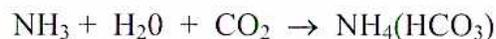
The ammonium bicarbonate can then be removed from the gas and either used as fertilizer or further processed to recover the CO 2 and re-use the ammonia. One problem to be resolved is the instability of ammonium bicarbonate at boiler temperatures.
Describe the purpose, design, operation, and application of a baghouse.
A baghouse, or fabric filter, removes particulate matter from the boiler flue gas stream with collection efficiencies up to 99.8%. It is a common piece of equipment whenever solid fuel is used and flyash must be removed from the flue gas. The gas is forced through a textile filter material shaped like a bag to facilitate handling.
A layer of flyash accumulates on the surface of the textile media, increasing the resistance to flue gas flow and reducing the micron size of the filter. The thickness of the ash is controlled by special cleaning methods. High collection efficiency results from the filtering effect of the dust cake itself. The flyash layer also serves to extend bag life by protecting the fabric from constant impingement by abrasive ash particles. The ash collects on either the inside or outside of the bags and falls into hoppers below.
Bag cleaning is achieved in several different ways. A fabric filter is divided into a number of compartments, each containing from a few hundred to several thousand bags, which are arranged in parallel in the gas flow path. Each has its own bag cleaning system. The bags are closed at one end and connected to a tubesheet at the other; this enables the gas to be divided among the individual bags. A baghouse layout is shown in Fig.9.
Bags are supported internally by a wire cage. Sizes are in the range of 12 cm diameter by 760 cm in length, although this can vary considerably. Although woven fibreglass is often used, most bags are constructed of a 3-ply material (two plies of a dense, random fibre felt or batt surrounding one ply of an open weave fabric called scrim). The felt or batt fibres are mechanically interlocked into the scrim by a process called needling. The felt fibre and fibre density provide filtration efficiency. The scrim reinforces the needled felt and contributes up to 90% of the strength, resistance to flex fatigue, and other properties that increase bag life.
![A detailed 3D cutaway schematic diagram of a baghouse, showing its internal and external components. The diagram is labeled with various parts: Purge / Ventilation Fan, Access Doors, Gentle Bag Re-Inflation System, Internal Walkway, Reverse Air Fans, Structural Support Steel, Tube Sheet with Thimbles, Sliding-Type Support Feet, Purge / Ventilation Duct, Damper Operators, Reverse Air Flue, Reverse Air Dampers, Outlet Dampers, Outlet Flue, Filter Bag Supports, Filter Bags, Inlet Flue, Inlet Dampers, Hopper Inlets, Access Stairs and Platforms, and Hopper with Adequate Storage Capacity.](7b517f15a2d307945bd78e30c13a75bd_img.jpg)
Figure 9
Baghouse
Bag cleaning is a necessary process. A layer of flyash accumulates on the outside of the bags. The resistance to flow is increased because the ash is finer than the weave of the filter fabric. Eventually, sufficient resistance produces differential pressure across the fabric surface, collapsing the bags and limiting boiler fan capacity. If ignored, the end result can be permanent damage to the fabric as the spaces between its fibres become clogged with ash particles. This is called blinding . To prevent this, a cleaning system is used to remove part of the ash layer and reduce differential pressure. Three common types of cleaning systems are shown in Fig.10.
![Figure 10: Baghouse Cleaning Systems. The diagram illustrates three methods for cleaning baghouse filters: Reverse Gas, Shaker, and Pulse Jet. Each method is shown in two states: 'Normal Operation' and 'Cleaning'. In the 'Reverse Gas' section, 'Normal Operation' shows gas flowing downwards through the bags, while 'Reverse Gas Cleaning' shows gas flowing upwards, collapsing the bags. In the 'Shaker' section, 'Normal Operation' shows bags inflated with downward flow, and 'Shake Cleaning' shows bags deflated and being mechanically shaken. In the 'Pulse Jet' section, 'Normal Operation' shows bags inflated with downward flow, and 'Pulse Cleaning' shows a high-pressure air pulse entering from the top, inflating the bags and dislodging dust. All diagrams label the 'Tubesheet' at the bottom of the bags.](aaf3e6e44cdeabd6d1df869c5f392ea1_img.jpg)
Figure 10
Baghouse Cleaning Systems
In the reverse gas, or reverse air system, the gas flow is temporarily reversed by using a dedicated reverse gas fan. The reverse flow collapses the bags and dislodges the ash. The bags are gently re-inflated before full flow is re-admitted. This system does not always adequately clean the bags and is sometimes supplemented with sonic vibration devices to improve cleaning.
Shaker systems initially deflate the bags, before vibrating them clean using a mechanical shaker device.
In the pulse jet system, a downward pulse of air pressurizes the interior of the bag. The pulse momentarily reverses the flow of gases, and dislodges flyash from the outside while the shock wave travels down the bag. Pulse air pressure ranges from 205 kPa to 690 kPa. Pulses are controlled either by a timer or by the differential pressure across the bags.
Separate control for each compartment is sometimes used. Pulsing is usually staggered, one row at a time, in order to limit the possibility of ash re-entrainment in the gas stream and to reduce the capacity requirement of the air compressors. This is a very effective cleaning method, but it can cause additional wear on the bags.
The baghouse enclosure includes plenums for the inlet and outlet gases, and access to the interiors of the compartments, so that each compartment can be isolated individually while the rest of the unit is operating. This allows for safe entry, inspection, bag removal, and cleaning without shutting down the boiler. Bag life expectancy is 3 to 5 years, although problems such as excessive pulsing, excessively fine ash particles, or burning by particles of unburned carbon from the boiler furnace can easily reduce life expectancy to a few months. Hoppers at the bottom of the enclosure, shaped like inverted pyramids, collect and store the separated flyash and act as transition points between the baghouse and the flyash handling system.
Fabric filters are considerably less sensitive than electrostatic precipitators to variations in dust properties caused by different grades of coal and different firing conditions. However, when a bag filter operates at a temperature near the acid dew point, acid condensation can cause general corrosion and clog the filter material. The acid dew point depends on the composition of the coal, but it can be as low as 40°C or as high as 130°C. To protect the filter material, the fabric is pre-coated with alkaline flyash before use.
Condensation can cause fabric hydrolysis (the action of moisture breaking apart the molecular chains of a polymer or other organic and/or inorganic compound). This causes progressive aging, which decreases fabric strength and increases sensitivity to creasing.
Describe the purpose, design, operation, and application of an electrostatic precipitator.
An electrostatic precipitator removes particulate matter from a flue gas stream by electrically charging the individual particles. Upon entry into a precipitator, flue gas velocity is reduced to about 1/10 of its original velocity due to the difference in cross-sectional area of the precipitator inlet ducting and the precipitator casing. This velocity change causes some immediate settling of flyash. The flue gas then passes through a number of parallel passages in the precipitator, formed by collector plates, or curtains, hanging in parallel rows from the roof level. Wire discharge electrodes are stretched vertically in the centre of these passages.
The discharge electrodes are connected to the negative side of a high voltage DC power source, ranging from 30 kV to 75 kV. The collecting plates are grounded. The high electrical potential difference between the discharge electrodes and the collecting plates creates a series of high intensity electrical fields between them. The fields create a unipolar discharge, or corona, from the electrode wires which ionizes gas particles in the flue gas stream. These ionized gas atoms and molecules attach themselves to the flyash. The resulting negatively charged particles are forced by the field to the positively charged collecting plates. This diversion of flyash out of the gas stream is referred to as migration . The collecting plates are rapped periodically, and the loosened flyash falls into hoppers beneath the precipitators. See Fig.11 for an illustration of the electric fields, and Fig.12 for an illustration of precipitator installation.
![Diagram illustrating the electrical fields in an electrostatic precipitator. It shows a cross-section of the unit with collector electrodes at positive polarity and discharge electrodes at negative polarity. Flue gas enters from the left, containing uncharged particles. As the gas passes between the electrodes, the electrical field charges the particles. The charged particles are then attracted to the collector electrodes, forming a dust layer. The clean gas exits from the right. The diagram is labeled with: Flue Gas Flow, Uncharged Particles, Collector Electrode at Positive Polarity, Electrical Field, Charged Particle, Particles Attracted to Collecting Electrode and Forming Dust Layer, Ground, Discharge Electrode at Negative Polarity, and Clean Gas Exit.](6ca05954842b17f14dfd52f26b9d43d2_img.jpg)
The diagram shows a cross-sectional view of an electrostatic precipitator. On the left, a large arrow indicates 'Flue Gas Flow' entering the unit. Inside, there are vertical collector electrodes labeled 'Collector Electrode at Positive Polarity' and wire discharge electrodes labeled 'Discharge Electrode at Negative Polarity'. The discharge electrodes are connected to 'Ground'. The collector electrodes are also connected to 'Ground'. The diagram shows 'Uncharged Particles' entering from the left. As they pass between the electrodes, they become 'Charged Particle' (indicated by minus signs). The 'Electrical Field' is shown as lines between the electrodes. The charged particles are 'Attracted to Collecting Electrode and Forming Dust Layer'. On the right, a large arrow indicates 'Clean Gas Exit'.
Figure 11
Precipitator Electrical Fields
![A detailed 3D perspective line drawing of a precipitator installation. The structure is a large, rectangular metal framework supported by a 'Four Point Support System' at its base. Inside the frame, there are several vertical 'Collecting Curtains' and horizontal 'Discharge Electrode Rappers'. At the top, a 'Girder Support Assembly' holds 'Precipitator Controls'. On the left side, 'Inlet Flow Distribution Devices' are shown. A 'Rigid Discharge Frame' is located at the bottom center. The drawing uses hatching and perspective to show the internal components and the overall structure.](60ee3da582d29b56f1d2e705f6fc4588_img.jpg)
Figure 12
Precipitator Installation
Flyash collection efficiencies of up to 99.8%+ are common, but this is affected by many factors. The most important of these are:
The discharge electrodes are wires hung from the modular frames. The lower ends are weighted with ceramic insulators, or bottles . The bottles are located in an anti-sway device which keeps the discharge wires centred between the plates—the optimal position. These supported ceramic weights also prevent broken wires from falling into the ash collecting hoppers.
The collecting system consists of grounded collecting plates linked together in longitudinal rows, with a gap of 13 to 41 cm between them. The leading and trailing edges of the plates are suspended from anvil beams welded to the roof of the precipitators. The collecting plates have shock receiving plates. The plates or frames are located along the length of the collecting device at the top or bottom depending on the style of precipitator.
A rapping system periodically strikes the shock beams connected to the collecting plates and the discharge electrode frames to loosen the accumulated flyash, which then falls into the hoppers. The flyash tends to agglomerate and falls off in sheets as the plate is rapped. The plates are not rapped too frequently, as the particles would not be in sheets, but would re-enter the flue gas as particles. The rappers can be controlled not only for frequency, but also for intensity. Intensity is controlled by the height to which the iron hammer is raised before being dropped. Rappers may be driven either by a solenoid or by an external motor that turns a shaft with tumbling hammers attached to it that runs the width of the precipitator.
Vibrators may perform a similar function on the discharge electrode frames. A vibrator is an electromagnetic device with a coil energized by alternating current. Each time the coil is energized, a rod transmits vibrations to the high-tension wire supporting frame.
Transformer rectifier (TR) sets supply high voltage DC to the precipitator discharge electrodes via the discharge electrode frames. A TR set comprises a transformer, a silicon controlled rectifier (SCR), and high voltage switches, all contained in a common oil-filled tank usually mounted on the roof of the precipitator. The transformer steps up the supply voltage to 30 kV or more. The controllers repeat the following operating cycle for each TR set:
The control system's main function is to maintain voltage at the discharge electrode at its highest value below the sparking point. This is achieved automatically by gradually increasing voltage until sparking begins, and then stepping back the voltage to avoid flashover. Sparking causes re-entrainment of flyash in the flue gas stream, equipment damage, and loss of optimum current and voltage levels. This results in reduced collection efficiencies causing the boiler to be out of compliance with its operating permits.
The control system must also monitor voltage and current in order to identify the condition known as back corona . This is caused by ionization of gases and produces a flare which emits positive ions that cancel the negative charges on the particulate. Current is high, wasting power, but flyash is not attracted to the collecting plates. High resistivity ash in thick, insulating layers is a contributing cause.
Hoppers at the bottom of the precipitator enclosure collect and store the separated flyash and feed it to a conveying system for removal. The flyash conveying system must be maintained and operated efficiently to prevent build-up in the collection hoppers; this would result in re-entrainment of flyash into the gas stream. If it reaches the plates and wires, flyash build-up causes the formation of clinkers and excessive sparking. At a high level, ash may raise the bottles, taking tension off the electrode wires and allowing them to move towards or away from the collecting plates.
Fig. 13 illustrates the effect of a flyash layer on the collecting plates. In this example an extra 10 kV must be applied to the ash-coated plate.
![Figure 13: Voltage Increase from Ash Buildup. The diagram compares two scenarios: a clean plate and an ash-coated plate. On the left, for a 'CLEAN PLATE', the 'Emitting Electrode' is at 40 kV and the 'Collecting Plate' is at Ground. A curve shows the voltage drop across the gap, labeled 'Clean-Plate Sparkover Voltage'. On the right, for an 'ASH-COATED PLATE', the 'Emitting Electrode' is at 50 kV and the 'Collecting Plate' is at Ground. An 'Ash Layer' is shown on the collecting plate. A curve shows the voltage drop across the gap, which is higher than the clean plate curve. A vertical double-headed arrow on the left indicates the 'Voltage Increase Due to Ash Layer' between the 40 kV and 50 kV levels. A vertical arrow on the far left indicates 'Increasing Voltage'.](853ef5420f0432e626e83987e3f38a0b_img.jpg)
Figure 13
Voltage Increase from Ash Buildup
Particle resistivity is one of the fundamental parameters of electrostatic precipitation. Flyash resistivity is the ability of the particle to accept an electric charge. A reasonably conductive particle is needed in order to accept a charge and conduct ionic currents. The currents flow from the discharge electrode wire through the particle layer to the grounded collecting plate. The charged particles dislodge from the collecting plate when it is rapped. At higher resistivities, the particles become difficult to charge, corona power levels are suppressed, and the collecting plates become difficult to rap clean. As particle resistivity increases, back corona begins and becomes increasingly more severe as the resistivity rises.
Temperature also effects resistivity and precipitator performance. Air in-leakage from expansion joints, ducts, or the precipitator enclosure cools the flyash. The increase in in-leakage or tramp air volumes increases the total volume of gases passing through the precipitator. This results in increased flow velocities and reduced precipitator efficiency.
Sodium ion depletion also increases flyash resistivity. In operation, ash collects for a period of time before it is rapped off. A thin residual layer of ash remains on the collector plate. The total corona current flows through this ash layer. This flow of current depends upon the migration of sodium ions from the plate surface to the surface of the ash layer. Over time, the depletion of available sodium charge carriers in the ash layer occurs and decreases the flow of current.
B2.9